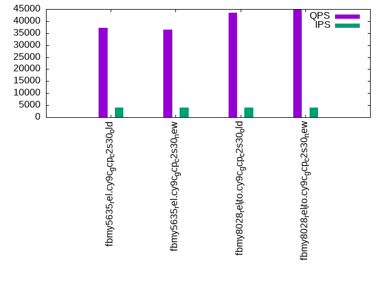
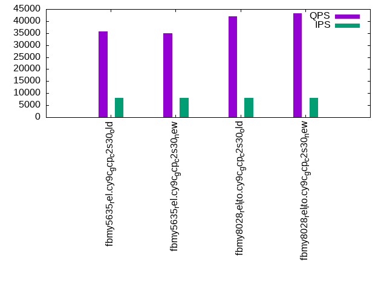

Introduction
This is a report for the insert benchmark with 160M docs and 8 client(s). It is generated by scripts (bash, awk, sed) and Tufte might not be impressed. An overview of the insert benchmark is here and a short update is here. Below, by DBMS, I mean DBMS+version.config. An example is my8020.c10b40 where my means MySQL, 8020 is version 8.0.20 and c10b40 is the name for the configuration file.
The test server is a c2-standard-30 from GCP with 15 cores, hyperthreads disabled, 120G RAM, XFS + SW RAID 0 on 4 NVMe devices (1.5TB). The benchmark was run with 8 client and there were 1 or 3 connections per client (1 for queries or inserts without rate limits, 1+1 for rate limited inserts+deletes). There are 8 tables, client per table. It loads 20M rows per table without secondary indexes, creates secondary indexes, then inserts 50M rows with a delete per insert to avoid growing the table. It then does 3 read+write tests for 3600s each that do queries as fast as possible with 100, 500 and then 1000 inserts/second/client concurrent with the queries and 1000 deletes/second to avoid growing the table. The database is cached by MyRocks and the only IO is for writes.
The tested DBMS are:
- fbmy5635_rel.cy9c_gcp_c2s30_old - MyRocks and FB MySQL 5.6.35, rel build, cy9c_gcp_c2s30 config, old build from Mar 2023
- fbmy5635_rel.cy9c_gcp_c2s30_new - MyRocks and FB MySQL 5.6.35, rel build, cy9c_gcp_c2s30 config, new build from Jun 2023 with RocksDB 8.2.1
- fbmy8028_rel_lto.cy9c_gcp_c2s30_old - MyRocks and FB MySQL 8.0.28, rel build, cy9c_gcp_c2s30 config, old build from Mar 2023
- fbmy8028_rel_lto.cy9c_gcp_c2s30_new - MyRocks and FB MySQL 8.0.28, rel build, cy9c_gcp_c2s30 config, new build from Jun 2023 with RocksDB 8.3.1
Contents
- Summary
- l.i0: load without secondary indexes
- l.x: create secondary indexes
- l.i1: continue load after secondary indexes created
- q100.1: range queries with 100 insert/s per client
- q500.1: range queries with 500 insert/s per client
- q1000.1: range queries with 1000 insert/s per client
Summary
The numbers are inserts/s for l.i0 and l.i1, indexed docs (or rows) /s for l.x and queries/s for q*.2. The values are the average rate over the entire test for inserts (IPS) and queries (QPS). The range of values for IPS and QPS is split into 3 parts: bottom 25%, middle 50%, top 25%. Values in the bottom 25% have a red background, values in the top 25% have a green background and values in the middle have no color. A gray background is used for values that can be ignored because the DBMS did not sustain the target insert rate. Red backgrounds are not used when the minimum value is within 80% of the max value.
| dbms | l.i0 | l.x | l.i1 | q100.1 | q500.1 | q1000.1 |
|---|---|---|---|---|---|---|
| 160m.fbmy5635_rel.cy9c_gcp_c2s30_old | 606061 | 812690 | 96223 | 38202 | 37164 | 35696 |
| 160m.fbmy5635_rel.cy9c_gcp_c2s30_new | 590406 | 784804 | 95488 | 37743 | 36443 | 34891 |
| 160m.fbmy8028_rel_lto.cy9c_gcp_c2s30_old | 524590 | 780976 | 96595 | 45026 | 43489 | 41868 |
| 160m.fbmy8028_rel_lto.cy9c_gcp_c2s30_new | 538720 | 804523 | 98595 | 46193 | 44950 | 43168 |
This table has relative throughput, throughput for the DBMS relative to the DBMS in the first line, using the absolute throughput from the previous table.
| dbms | l.i0 | l.x | l.i1 | q100.1 | q500.1 | q1000.1 |
|---|---|---|---|---|---|---|
| 160m.fbmy5635_rel.cy9c_gcp_c2s30_old | 1.00 | 1.00 | 1.00 | 1.00 | 1.00 | 1.00 |
| 160m.fbmy5635_rel.cy9c_gcp_c2s30_new | 0.97 | 0.97 | 0.99 | 0.99 | 0.98 | 0.98 |
| 160m.fbmy8028_rel_lto.cy9c_gcp_c2s30_old | 0.87 | 0.96 | 1.00 | 1.18 | 1.17 | 1.17 |
| 160m.fbmy8028_rel_lto.cy9c_gcp_c2s30_new | 0.89 | 0.99 | 1.02 | 1.21 | 1.21 | 1.21 |
This lists the average rate of inserts/s for the tests that do inserts concurrent with queries. For such tests the query rate is listed in the table above. The read+write tests are setup so that the insert rate should match the target rate every second. Cells that are not at least 95% of the target have a red background to indicate a failure to satisfy the target.
| dbms | q100.1 | q500.1 | q1000.1 |
|---|---|---|---|
| fbmy5635_rel.cy9c_gcp_c2s30_old | 797 | 3987 | 7973 |
| fbmy5635_rel.cy9c_gcp_c2s30_new | 797 | 3987 | 7971 |
| fbmy8028_rel_lto.cy9c_gcp_c2s30_old | 797 | 3987 | 7973 |
| fbmy8028_rel_lto.cy9c_gcp_c2s30_new | 797 | 3987 | 7973 |
| target | 800 | 4000 | 8000 |
l.i0
l.i0: load without secondary indexes. Graphs for performance per 1-second interval are here.
Average throughput:
Insert response time histogram: each cell has the percentage of responses that take <= the time in the header and max is the max response time in seconds. For the max column values in the top 25% of the range have a red background and in the bottom 25% of the range have a green background. The red background is not used when the min value is within 80% of the max value.
| dbms | 256us | 1ms | 4ms | 16ms | 64ms | 256ms | 1s | 4s | 16s | gt | max |
|---|---|---|---|---|---|---|---|---|---|---|---|
| fbmy5635_rel.cy9c_gcp_c2s30_old | 22.690 | 77.286 | 0.009 | 0.001 | 0.012 | 0.001 | 0.296 | ||||
| fbmy5635_rel.cy9c_gcp_c2s30_new | 21.011 | 78.964 | 0.009 | 0.002 | 0.013 | nonzero | 0.408 | ||||
| fbmy8028_rel_lto.cy9c_gcp_c2s30_old | 12.788 | 87.044 | 0.145 | 0.009 | 0.013 | 0.001 | 0.261 | ||||
| fbmy8028_rel_lto.cy9c_gcp_c2s30_new | 13.474 | 86.355 | 0.151 | 0.006 | 0.015 | nonzero | 0.257 |
Performance metrics for the DBMS listed above. Some are normalized by throughput, others are not. Legend for results is here.
ips qps rps rmbps wps wmbps rpq rkbpq wpi wkbpi csps cpups cspq cpupq dbgb1 dbgb2 rss maxop p50 p99 tag 606061 0 0 0.0 520.9 147.6 0.000 0.000 0.001 0.249 81739 70.9 0.135 18 5.2 6.6 NA 0.296 80207 55739 160m.fbmy5635_rel.cy9c_gcp_c2s30_old 590406 0 0 0.0 499.4 158.3 0.000 0.000 0.001 0.275 80086 70.1 0.136 18 5.4 6.9 NA 0.408 77117 54241 160m.fbmy5635_rel.cy9c_gcp_c2s30_new 524590 0 0 0.0 474.9 130.4 0.000 0.000 0.001 0.254 67660 70.5 0.129 20 5.2 6.9 1.8 0.261 67927 52261 160m.fbmy8028_rel_lto.cy9c_gcp_c2s30_old 538720 0 0 0.0 454.5 141.1 0.000 0.000 0.001 0.268 69666 69.0 0.129 19 5.2 6.9 1.8 0.257 70825 47749 160m.fbmy8028_rel_lto.cy9c_gcp_c2s30_new
l.x
l.x: create secondary indexes.
Average throughput:

Performance metrics for the DBMS listed above. Some are normalized by throughput, others are not. Legend for results is here.
ips qps rps rmbps wps wmbps rpq rkbpq wpi wkbpi csps cpups cspq cpupq dbgb1 dbgb2 rss maxop p50 p99 tag 812690 0 1 0.1 302.8 106.7 0.000 0.000 0.000 0.134 1052 50.0 0.001 9 10.8 12.3 NA 0.002 NA NA 160m.fbmy5635_rel.cy9c_gcp_c2s30_old 784804 0 1 0.1 302.3 105.0 0.000 0.000 0.000 0.137 1224 50.1 0.002 10 10.8 12.3 NA 0.036 NA NA 160m.fbmy5635_rel.cy9c_gcp_c2s30_new 780976 0 1 0.1 282.0 106.6 0.000 0.000 0.000 0.140 1465 49.9 0.002 10 10.8 12.5 12.0 0.002 NA NA 160m.fbmy8028_rel_lto.cy9c_gcp_c2s30_old 804523 0 1 0.1 291.3 107.4 0.000 0.000 0.000 0.137 1508 49.7 0.002 9 10.8 12.5 12.0 0.002 NA NA 160m.fbmy8028_rel_lto.cy9c_gcp_c2s30_new
l.i1
l.i1: continue load after secondary indexes created. Graphs for performance per 1-second interval are here.
Average throughput:

Insert response time histogram: each cell has the percentage of responses that take <= the time in the header and max is the max response time in seconds. For the max column values in the top 25% of the range have a red background and in the bottom 25% of the range have a green background. The red background is not used when the min value is within 80% of the max value.
| dbms | 256us | 1ms | 4ms | 16ms | 64ms | 256ms | 1s | 4s | 16s | gt | max |
|---|---|---|---|---|---|---|---|---|---|---|---|
| fbmy5635_rel.cy9c_gcp_c2s30_old | 0.028 | 49.089 | 50.801 | 0.069 | 0.013 | 0.001 | 0.379 | ||||
| fbmy5635_rel.cy9c_gcp_c2s30_new | 0.028 | 49.121 | 50.703 | 0.135 | 0.013 | 0.001 | 0.656 | ||||
| fbmy8028_rel_lto.cy9c_gcp_c2s30_old | 0.018 | 55.805 | 43.930 | 0.225 | 0.019 | 0.002 | nonzero | 1.171 | |||
| fbmy8028_rel_lto.cy9c_gcp_c2s30_new | 0.032 | 62.070 | 37.626 | 0.253 | 0.018 | 0.002 | 0.628 |
Delete response time histogram: each cell has the percentage of responses that take <= the time in the header and max is the max response time in seconds. For the max column values in the top 25% of the range have a red background and in the bottom 25% of the range have a green background. The red background is not used when the min value is within 80% of the max value.
| dbms | 256us | 1ms | 4ms | 16ms | 64ms | 256ms | 1s | 4s | 16s | gt | max |
|---|---|---|---|---|---|---|---|---|---|---|---|
| fbmy5635_rel.cy9c_gcp_c2s30_old | 0.027 | 43.902 | 55.982 | 0.072 | 0.015 | 0.001 | 0.379 | ||||
| fbmy5635_rel.cy9c_gcp_c2s30_new | 0.027 | 43.585 | 56.231 | 0.141 | 0.015 | 0.001 | 0.657 | ||||
| fbmy8028_rel_lto.cy9c_gcp_c2s30_old | 0.021 | 51.830 | 47.894 | 0.233 | 0.020 | 0.002 | nonzero | 1.171 | |||
| fbmy8028_rel_lto.cy9c_gcp_c2s30_new | 0.034 | 59.639 | 40.048 | 0.259 | 0.018 | 0.002 | 0.627 |
Performance metrics for the DBMS listed above. Some are normalized by throughput, others are not. Legend for results is here.
ips qps rps rmbps wps wmbps rpq rkbpq wpi wkbpi csps cpups cspq cpupq dbgb1 dbgb2 rss maxop p50 p99 tag 96223 0 3 1.3 472.7 131.0 0.000 0.014 0.005 1.394 86361 60.9 0.898 95 16.6 17.9 NA 0.379 12236 8889 160m.fbmy5635_rel.cy9c_gcp_c2s30_old 95488 0 3 1.3 463.0 131.3 0.000 0.014 0.005 1.408 88110 61.6 0.923 97 20.1 21.4 NA 0.656 12186 7442 160m.fbmy5635_rel.cy9c_gcp_c2s30_new 96595 0 3 1.3 495.6 129.4 0.000 0.014 0.005 1.372 73352 64.8 0.759 101 16.8 18.3 50.4 1.171 12586 3996 160m.fbmy8028_rel_lto.cy9c_gcp_c2s30_old 98595 0 3 1.4 501.0 132.1 0.000 0.014 0.005 1.372 75551 64.3 0.766 98 21.6 23.1 50.4 0.628 12936 3947 160m.fbmy8028_rel_lto.cy9c_gcp_c2s30_new
q100.1
q100.1: range queries with 100 insert/s per client. Graphs for performance per 1-second interval are here.
Average throughput:
Query response time histogram: each cell has the percentage of responses that take <= the time in the header and max is the max response time in seconds. For max values in the top 25% of the range have a red background and in the bottom 25% of the range have a green background. The red background is not used when the min value is within 80% of the max value.
| dbms | 256us | 1ms | 4ms | 16ms | 64ms | 256ms | 1s | 4s | 16s | gt | max |
|---|---|---|---|---|---|---|---|---|---|---|---|
| fbmy5635_rel.cy9c_gcp_c2s30_old | 98.183 | 1.815 | 0.001 | nonzero | nonzero | 0.016 | |||||
| fbmy5635_rel.cy9c_gcp_c2s30_new | 98.185 | 1.814 | 0.001 | nonzero | nonzero | 0.020 | |||||
| fbmy8028_rel_lto.cy9c_gcp_c2s30_old | 99.239 | 0.760 | 0.001 | nonzero | 0.014 | ||||||
| fbmy8028_rel_lto.cy9c_gcp_c2s30_new | 99.133 | 0.866 | 0.001 | nonzero | nonzero | 0.017 |
Insert response time histogram: each cell has the percentage of responses that take <= the time in the header and max is the max response time in seconds. For max values in the top 25% of the range have a red background and in the bottom 25% of the range have a green background. The red background is not used when the min value is within 80% of the max value.
| dbms | 256us | 1ms | 4ms | 16ms | 64ms | 256ms | 1s | 4s | 16s | gt | max |
|---|---|---|---|---|---|---|---|---|---|---|---|
| fbmy5635_rel.cy9c_gcp_c2s30_old | 19.321 | 80.677 | 0.002 | 0.005 | |||||||
| fbmy5635_rel.cy9c_gcp_c2s30_new | 24.672 | 75.321 | 0.005 | 0.002 | 0.020 | ||||||
| fbmy8028_rel_lto.cy9c_gcp_c2s30_old | 15.568 | 84.411 | 0.017 | 0.003 | 0.020 | ||||||
| fbmy8028_rel_lto.cy9c_gcp_c2s30_new | 25.299 | 74.691 | 0.009 | 0.002 | 0.019 |
Delete response time histogram: each cell has the percentage of responses that take <= the time in the header and max is the max response time in seconds. For max values in the top 25% of the range have a red background and in the bottom 25% of the range have a green background. The red background is not used when the min value is within 80% of the max value.
| dbms | 256us | 1ms | 4ms | 16ms | 64ms | 256ms | 1s | 4s | 16s | gt | max |
|---|---|---|---|---|---|---|---|---|---|---|---|
| fbmy5635_rel.cy9c_gcp_c2s30_old | 13.590 | 86.408 | 0.002 | 0.015 | |||||||
| fbmy5635_rel.cy9c_gcp_c2s30_new | 13.436 | 86.557 | 0.005 | 0.002 | 0.020 | ||||||
| fbmy8028_rel_lto.cy9c_gcp_c2s30_old | 29.552 | 70.425 | 0.023 | 0.013 | |||||||
| fbmy8028_rel_lto.cy9c_gcp_c2s30_new | 31.283 | 68.710 | 0.005 | 0.002 | 0.018 |
Performance metrics for the DBMS listed above. Some are normalized by throughput, others are not. Legend for results is here.
ips qps rps rmbps wps wmbps rpq rkbpq wpi wkbpi csps cpups cspq cpupq dbgb1 dbgb2 rss maxop p50 p99 tag 797 38202 0 0.0 13.6 2.1 0.000 0.000 0.017 2.745 147767 53.5 3.868 210 12.0 13.9 NA 0.016 4747 3820 160m.fbmy5635_rel.cy9c_gcp_c2s30_old 797 37743 0 0.0 13.0 2.1 0.000 0.000 0.016 2.707 146016 53.4 3.869 212 12.0 13.9 NA 0.020 4731 3900 160m.fbmy5635_rel.cy9c_gcp_c2s30_new 797 45026 0 0.0 15.7 2.5 0.000 0.000 0.020 3.272 173448 54.9 3.852 183 11.9 14.0 69.3 0.014 5658 3820 160m.fbmy8028_rel_lto.cy9c_gcp_c2s30_old 797 46193 0 0.0 18.1 2.6 0.000 0.000 0.023 3.303 177824 54.7 3.850 178 11.9 14.1 70.8 0.017 5770 3676 160m.fbmy8028_rel_lto.cy9c_gcp_c2s30_new
q500.1
q500.1: range queries with 500 insert/s per client. Graphs for performance per 1-second interval are here.
Average throughput:
Query response time histogram: each cell has the percentage of responses that take <= the time in the header and max is the max response time in seconds. For max values in the top 25% of the range have a red background and in the bottom 25% of the range have a green background. The red background is not used when the min value is within 80% of the max value.
| dbms | 256us | 1ms | 4ms | 16ms | 64ms | 256ms | 1s | 4s | 16s | gt | max |
|---|---|---|---|---|---|---|---|---|---|---|---|
| fbmy5635_rel.cy9c_gcp_c2s30_old | 96.649 | 3.346 | 0.004 | nonzero | nonzero | 0.024 | |||||
| fbmy5635_rel.cy9c_gcp_c2s30_new | 96.211 | 3.785 | 0.004 | nonzero | nonzero | 0.021 | |||||
| fbmy8028_rel_lto.cy9c_gcp_c2s30_old | 98.878 | 1.117 | 0.005 | nonzero | 0.012 | ||||||
| fbmy8028_rel_lto.cy9c_gcp_c2s30_new | 99.431 | 0.565 | 0.003 | nonzero | 0.014 |
Insert response time histogram: each cell has the percentage of responses that take <= the time in the header and max is the max response time in seconds. For max values in the top 25% of the range have a red background and in the bottom 25% of the range have a green background. The red background is not used when the min value is within 80% of the max value.
| dbms | 256us | 1ms | 4ms | 16ms | 64ms | 256ms | 1s | 4s | 16s | gt | max |
|---|---|---|---|---|---|---|---|---|---|---|---|
| fbmy5635_rel.cy9c_gcp_c2s30_old | 16.354 | 83.557 | 0.088 | 0.001 | 0.025 | ||||||
| fbmy5635_rel.cy9c_gcp_c2s30_new | 29.507 | 70.474 | 0.018 | nonzero | 0.031 | ||||||
| fbmy8028_rel_lto.cy9c_gcp_c2s30_old | 15.913 | 83.618 | 0.466 | 0.004 | 0.053 | ||||||
| fbmy8028_rel_lto.cy9c_gcp_c2s30_new | 42.442 | 57.550 | 0.006 | 0.001 | 0.057 |
Delete response time histogram: each cell has the percentage of responses that take <= the time in the header and max is the max response time in seconds. For max values in the top 25% of the range have a red background and in the bottom 25% of the range have a green background. The red background is not used when the min value is within 80% of the max value.
| dbms | 256us | 1ms | 4ms | 16ms | 64ms | 256ms | 1s | 4s | 16s | gt | max |
|---|---|---|---|---|---|---|---|---|---|---|---|
| fbmy5635_rel.cy9c_gcp_c2s30_old | 22.442 | 77.457 | 0.098 | 0.002 | 0.025 | ||||||
| fbmy5635_rel.cy9c_gcp_c2s30_new | 29.112 | 70.856 | 0.031 | 0.001 | 0.031 | ||||||
| fbmy8028_rel_lto.cy9c_gcp_c2s30_old | 29.337 | 70.272 | 0.387 | 0.004 | 0.053 | ||||||
| fbmy8028_rel_lto.cy9c_gcp_c2s30_new | 57.892 | 42.099 | 0.007 | 0.003 | 0.054 |
Performance metrics for the DBMS listed above. Some are normalized by throughput, others are not. Legend for results is here.
ips qps rps rmbps wps wmbps rpq rkbpq wpi wkbpi csps cpups cspq cpupq dbgb1 dbgb2 rss maxop p50 p99 tag 3987 37164 0 0.0 28.2 7.3 0.000 0.000 0.007 1.884 145017 55.1 3.902 222 12.2 13.2 NA 0.024 4683 4251 160m.fbmy5635_rel.cy9c_gcp_c2s30_old 3987 36443 0 0.0 27.9 7.5 0.000 0.000 0.007 1.934 142449 55.2 3.909 227 12.1 13.1 NA 0.021 4571 4140 160m.fbmy5635_rel.cy9c_gcp_c2s30_new 3987 43489 0 0.0 29.3 8.1 0.000 0.000 0.007 2.084 168771 56.5 3.881 195 12.0 13.3 81.6 0.012 5466 4987 160m.fbmy8028_rel_lto.cy9c_gcp_c2s30_old 3987 44950 0 0.0 29.1 7.7 0.000 0.000 0.007 1.985 174484 56.0 3.882 187 12.1 13.3 81.5 0.014 5642 5114 160m.fbmy8028_rel_lto.cy9c_gcp_c2s30_new
q1000.1
q1000.1: range queries with 1000 insert/s per client. Graphs for performance per 1-second interval are here.
Average throughput:
Query response time histogram: each cell has the percentage of responses that take <= the time in the header and max is the max response time in seconds. For max values in the top 25% of the range have a red background and in the bottom 25% of the range have a green background. The red background is not used when the min value is within 80% of the max value.
| dbms | 256us | 1ms | 4ms | 16ms | 64ms | 256ms | 1s | 4s | 16s | gt | max |
|---|---|---|---|---|---|---|---|---|---|---|---|
| fbmy5635_rel.cy9c_gcp_c2s30_old | 91.599 | 8.393 | 0.008 | nonzero | nonzero | 0.031 | |||||
| fbmy5635_rel.cy9c_gcp_c2s30_new | 89.891 | 10.100 | 0.008 | nonzero | nonzero | 0.033 | |||||
| fbmy8028_rel_lto.cy9c_gcp_c2s30_old | 97.454 | 2.538 | 0.007 | nonzero | nonzero | 0.032 | |||||
| fbmy8028_rel_lto.cy9c_gcp_c2s30_new | 98.299 | 1.694 | 0.007 | nonzero | nonzero | 0.031 |
Insert response time histogram: each cell has the percentage of responses that take <= the time in the header and max is the max response time in seconds. For max values in the top 25% of the range have a red background and in the bottom 25% of the range have a green background. The red background is not used when the min value is within 80% of the max value.
| dbms | 256us | 1ms | 4ms | 16ms | 64ms | 256ms | 1s | 4s | 16s | gt | max |
|---|---|---|---|---|---|---|---|---|---|---|---|
| fbmy5635_rel.cy9c_gcp_c2s30_old | 13.357 | 85.453 | 1.183 | 0.006 | 0.029 | ||||||
| fbmy5635_rel.cy9c_gcp_c2s30_new | 15.914 | 83.791 | 0.291 | 0.003 | 0.033 | ||||||
| fbmy8028_rel_lto.cy9c_gcp_c2s30_old | 20.654 | 79.097 | 0.247 | 0.002 | 0.031 | ||||||
| fbmy8028_rel_lto.cy9c_gcp_c2s30_new | 32.449 | 67.348 | 0.198 | 0.004 | 0.031 |
Delete response time histogram: each cell has the percentage of responses that take <= the time in the header and max is the max response time in seconds. For max values in the top 25% of the range have a red background and in the bottom 25% of the range have a green background. The red background is not used when the min value is within 80% of the max value.
| dbms | 256us | 1ms | 4ms | 16ms | 64ms | 256ms | 1s | 4s | 16s | gt | max |
|---|---|---|---|---|---|---|---|---|---|---|---|
| fbmy5635_rel.cy9c_gcp_c2s30_old | 17.378 | 81.486 | 1.129 | 0.007 | 0.029 | ||||||
| fbmy5635_rel.cy9c_gcp_c2s30_new | 18.415 | 81.322 | 0.258 | 0.005 | 0.040 | ||||||
| fbmy8028_rel_lto.cy9c_gcp_c2s30_old | 31.907 | 67.869 | 0.219 | 0.004 | 0.031 | ||||||
| fbmy8028_rel_lto.cy9c_gcp_c2s30_new | 39.889 | 59.922 | 0.184 | 0.005 | 0.032 |
Performance metrics for the DBMS listed above. Some are normalized by throughput, others are not. Legend for results is here.
ips qps rps rmbps wps wmbps rpq rkbpq wpi wkbpi csps cpups cspq cpupq dbgb1 dbgb2 rss maxop p50 p99 tag 7973 35696 0 0.0 56.0 15.0 0.000 0.000 0.007 1.931 140059 57.8 3.924 243 12.2 13.4 NA 0.031 4491 4077 160m.fbmy5635_rel.cy9c_gcp_c2s30_old 7971 34891 0 0.0 55.8 14.5 0.000 0.000 0.007 1.868 137654 57.8 3.945 248 12.3 13.5 NA 0.033 4427 3964 160m.fbmy5635_rel.cy9c_gcp_c2s30_new 7973 41868 0 0.0 58.4 15.1 0.000 0.000 0.007 1.937 163515 58.8 3.906 211 12.2 13.6 82.6 0.032 5242 4747 160m.fbmy8028_rel_lto.cy9c_gcp_c2s30_old 7973 43168 0 0.0 58.5 14.9 0.000 0.000 0.007 1.909 168636 58.7 3.907 204 12.3 13.7 82.7 0.031 5402 4891 160m.fbmy8028_rel_lto.cy9c_gcp_c2s30_new
l.i0
l.i0: load without secondary indexes
Performance metrics for all DBMS, not just the ones listed above. Some are normalized by throughput, others are not. Legend for results is here.
ips qps rps rmbps wps wmbps rpq rkbpq wpi wkbpi csps cpups cspq cpupq dbgb1 dbgb2 rss maxop p50 p99 tag 606061 0 0 0.0 520.9 147.6 0.000 0.000 0.001 0.249 81739 70.9 0.135 18 5.2 6.6 NA 0.296 80207 55739 160m.fbmy5635_rel.cy9c_gcp_c2s30_old 590406 0 0 0.0 499.4 158.3 0.000 0.000 0.001 0.275 80086 70.1 0.136 18 5.4 6.9 NA 0.408 77117 54241 160m.fbmy5635_rel.cy9c_gcp_c2s30_new 524590 0 0 0.0 474.9 130.4 0.000 0.000 0.001 0.254 67660 70.5 0.129 20 5.2 6.9 1.8 0.261 67927 52261 160m.fbmy8028_rel_lto.cy9c_gcp_c2s30_old 538720 0 0 0.0 454.5 141.1 0.000 0.000 0.001 0.268 69666 69.0 0.129 19 5.2 6.9 1.8 0.257 70825 47749 160m.fbmy8028_rel_lto.cy9c_gcp_c2s30_new
l.x
l.x: create secondary indexes
Performance metrics for all DBMS, not just the ones listed above. Some are normalized by throughput, others are not. Legend for results is here.
ips qps rps rmbps wps wmbps rpq rkbpq wpi wkbpi csps cpups cspq cpupq dbgb1 dbgb2 rss maxop p50 p99 tag 812690 0 1 0.1 302.8 106.7 0.000 0.000 0.000 0.134 1052 50.0 0.001 9 10.8 12.3 NA 0.002 NA NA 160m.fbmy5635_rel.cy9c_gcp_c2s30_old 784804 0 1 0.1 302.3 105.0 0.000 0.000 0.000 0.137 1224 50.1 0.002 10 10.8 12.3 NA 0.036 NA NA 160m.fbmy5635_rel.cy9c_gcp_c2s30_new 780976 0 1 0.1 282.0 106.6 0.000 0.000 0.000 0.140 1465 49.9 0.002 10 10.8 12.5 12.0 0.002 NA NA 160m.fbmy8028_rel_lto.cy9c_gcp_c2s30_old 804523 0 1 0.1 291.3 107.4 0.000 0.000 0.000 0.137 1508 49.7 0.002 9 10.8 12.5 12.0 0.002 NA NA 160m.fbmy8028_rel_lto.cy9c_gcp_c2s30_new
l.i1
l.i1: continue load after secondary indexes created
Performance metrics for all DBMS, not just the ones listed above. Some are normalized by throughput, others are not. Legend for results is here.
ips qps rps rmbps wps wmbps rpq rkbpq wpi wkbpi csps cpups cspq cpupq dbgb1 dbgb2 rss maxop p50 p99 tag 96223 0 3 1.3 472.7 131.0 0.000 0.014 0.005 1.394 86361 60.9 0.898 95 16.6 17.9 NA 0.379 12236 8889 160m.fbmy5635_rel.cy9c_gcp_c2s30_old 95488 0 3 1.3 463.0 131.3 0.000 0.014 0.005 1.408 88110 61.6 0.923 97 20.1 21.4 NA 0.656 12186 7442 160m.fbmy5635_rel.cy9c_gcp_c2s30_new 96595 0 3 1.3 495.6 129.4 0.000 0.014 0.005 1.372 73352 64.8 0.759 101 16.8 18.3 50.4 1.171 12586 3996 160m.fbmy8028_rel_lto.cy9c_gcp_c2s30_old 98595 0 3 1.4 501.0 132.1 0.000 0.014 0.005 1.372 75551 64.3 0.766 98 21.6 23.1 50.4 0.628 12936 3947 160m.fbmy8028_rel_lto.cy9c_gcp_c2s30_new
q100.1
q100.1: range queries with 100 insert/s per client
Performance metrics for all DBMS, not just the ones listed above. Some are normalized by throughput, others are not. Legend for results is here.
ips qps rps rmbps wps wmbps rpq rkbpq wpi wkbpi csps cpups cspq cpupq dbgb1 dbgb2 rss maxop p50 p99 tag 797 38202 0 0.0 13.6 2.1 0.000 0.000 0.017 2.745 147767 53.5 3.868 210 12.0 13.9 NA 0.016 4747 3820 160m.fbmy5635_rel.cy9c_gcp_c2s30_old 797 37743 0 0.0 13.0 2.1 0.000 0.000 0.016 2.707 146016 53.4 3.869 212 12.0 13.9 NA 0.020 4731 3900 160m.fbmy5635_rel.cy9c_gcp_c2s30_new 797 45026 0 0.0 15.7 2.5 0.000 0.000 0.020 3.272 173448 54.9 3.852 183 11.9 14.0 69.3 0.014 5658 3820 160m.fbmy8028_rel_lto.cy9c_gcp_c2s30_old 797 46193 0 0.0 18.1 2.6 0.000 0.000 0.023 3.303 177824 54.7 3.850 178 11.9 14.1 70.8 0.017 5770 3676 160m.fbmy8028_rel_lto.cy9c_gcp_c2s30_new
q500.1
q500.1: range queries with 500 insert/s per client
Performance metrics for all DBMS, not just the ones listed above. Some are normalized by throughput, others are not. Legend for results is here.
ips qps rps rmbps wps wmbps rpq rkbpq wpi wkbpi csps cpups cspq cpupq dbgb1 dbgb2 rss maxop p50 p99 tag 3987 37164 0 0.0 28.2 7.3 0.000 0.000 0.007 1.884 145017 55.1 3.902 222 12.2 13.2 NA 0.024 4683 4251 160m.fbmy5635_rel.cy9c_gcp_c2s30_old 3987 36443 0 0.0 27.9 7.5 0.000 0.000 0.007 1.934 142449 55.2 3.909 227 12.1 13.1 NA 0.021 4571 4140 160m.fbmy5635_rel.cy9c_gcp_c2s30_new 3987 43489 0 0.0 29.3 8.1 0.000 0.000 0.007 2.084 168771 56.5 3.881 195 12.0 13.3 81.6 0.012 5466 4987 160m.fbmy8028_rel_lto.cy9c_gcp_c2s30_old 3987 44950 0 0.0 29.1 7.7 0.000 0.000 0.007 1.985 174484 56.0 3.882 187 12.1 13.3 81.5 0.014 5642 5114 160m.fbmy8028_rel_lto.cy9c_gcp_c2s30_new
q1000.1
q1000.1: range queries with 1000 insert/s per client
Performance metrics for all DBMS, not just the ones listed above. Some are normalized by throughput, others are not. Legend for results is here.
ips qps rps rmbps wps wmbps rpq rkbpq wpi wkbpi csps cpups cspq cpupq dbgb1 dbgb2 rss maxop p50 p99 tag 7973 35696 0 0.0 56.0 15.0 0.000 0.000 0.007 1.931 140059 57.8 3.924 243 12.2 13.4 NA 0.031 4491 4077 160m.fbmy5635_rel.cy9c_gcp_c2s30_old 7971 34891 0 0.0 55.8 14.5 0.000 0.000 0.007 1.868 137654 57.8 3.945 248 12.3 13.5 NA 0.033 4427 3964 160m.fbmy5635_rel.cy9c_gcp_c2s30_new 7973 41868 0 0.0 58.4 15.1 0.000 0.000 0.007 1.937 163515 58.8 3.906 211 12.2 13.6 82.6 0.032 5242 4747 160m.fbmy8028_rel_lto.cy9c_gcp_c2s30_old 7973 43168 0 0.0 58.5 14.9 0.000 0.000 0.007 1.909 168636 58.7 3.907 204 12.3 13.7 82.7 0.031 5402 4891 160m.fbmy8028_rel_lto.cy9c_gcp_c2s30_new
l.i0
- l.i0: load without secondary indexes
- Legend for results is here.
- Each entry lists the percentage of responses that fit in that bucket (slower than max time for previous bucket, faster than min time for next bucket).
Insert response time histogram
256us 1ms 4ms 16ms 64ms 256ms 1s 4s 16s gt max tag 0.000 22.690 77.286 0.009 0.001 0.012 0.001 0.000 0.000 0.000 0.296 fbmy5635_rel.cy9c_gcp_c2s30_old 0.000 21.011 78.964 0.009 0.002 0.013 nonzero 0.000 0.000 0.000 0.408 fbmy5635_rel.cy9c_gcp_c2s30_new 0.000 12.788 87.044 0.145 0.009 0.013 0.001 0.000 0.000 0.000 0.261 fbmy8028_rel_lto.cy9c_gcp_c2s30_old 0.000 13.474 86.355 0.151 0.006 0.015 nonzero 0.000 0.000 0.000 0.257 fbmy8028_rel_lto.cy9c_gcp_c2s30_new
l.x
- l.x: create secondary indexes
- Legend for results is here.
- Each entry lists the percentage of responses that fit in that bucket (slower than max time for previous bucket, faster than min time for next bucket).
TODO - determine whether there is data for create index response time
l.i1
- l.i1: continue load after secondary indexes created
- Legend for results is here.
- Each entry lists the percentage of responses that fit in that bucket (slower than max time for previous bucket, faster than min time for next bucket).
Insert response time histogram
256us 1ms 4ms 16ms 64ms 256ms 1s 4s 16s gt max tag 0.000 0.028 49.089 50.801 0.069 0.013 0.001 0.000 0.000 0.000 0.379 fbmy5635_rel.cy9c_gcp_c2s30_old 0.000 0.028 49.121 50.703 0.135 0.013 0.001 0.000 0.000 0.000 0.656 fbmy5635_rel.cy9c_gcp_c2s30_new 0.000 0.018 55.805 43.930 0.225 0.019 0.002 nonzero 0.000 0.000 1.171 fbmy8028_rel_lto.cy9c_gcp_c2s30_old 0.000 0.032 62.070 37.626 0.253 0.018 0.002 0.000 0.000 0.000 0.628 fbmy8028_rel_lto.cy9c_gcp_c2s30_new
Delete response time histogram
256us 1ms 4ms 16ms 64ms 256ms 1s 4s 16s gt max tag 0.000 0.027 43.902 55.982 0.072 0.015 0.001 0.000 0.000 0.000 0.379 fbmy5635_rel.cy9c_gcp_c2s30_old 0.000 0.027 43.585 56.231 0.141 0.015 0.001 0.000 0.000 0.000 0.657 fbmy5635_rel.cy9c_gcp_c2s30_new 0.000 0.021 51.830 47.894 0.233 0.020 0.002 nonzero 0.000 0.000 1.171 fbmy8028_rel_lto.cy9c_gcp_c2s30_old 0.000 0.034 59.639 40.048 0.259 0.018 0.002 0.000 0.000 0.000 0.627 fbmy8028_rel_lto.cy9c_gcp_c2s30_new
q100.1
- q100.1: range queries with 100 insert/s per client
- Legend for results is here.
- Each entry lists the percentage of responses that fit in that bucket (slower than max time for previous bucket, faster than min time for next bucket).
Query response time histogram
256us 1ms 4ms 16ms 64ms 256ms 1s 4s 16s gt max tag 98.183 1.815 0.001 nonzero nonzero 0.000 0.000 0.000 0.000 0.000 0.016 fbmy5635_rel.cy9c_gcp_c2s30_old 98.185 1.814 0.001 nonzero nonzero 0.000 0.000 0.000 0.000 0.000 0.020 fbmy5635_rel.cy9c_gcp_c2s30_new 99.239 0.760 0.001 nonzero 0.000 0.000 0.000 0.000 0.000 0.000 0.014 fbmy8028_rel_lto.cy9c_gcp_c2s30_old 99.133 0.866 0.001 nonzero nonzero 0.000 0.000 0.000 0.000 0.000 0.017 fbmy8028_rel_lto.cy9c_gcp_c2s30_new
Insert response time histogram
256us 1ms 4ms 16ms 64ms 256ms 1s 4s 16s gt max tag 0.000 19.321 80.677 0.002 0.000 0.000 0.000 0.000 0.000 0.000 0.005 fbmy5635_rel.cy9c_gcp_c2s30_old 0.000 24.672 75.321 0.005 0.002 0.000 0.000 0.000 0.000 0.000 0.020 fbmy5635_rel.cy9c_gcp_c2s30_new 0.000 15.568 84.411 0.017 0.003 0.000 0.000 0.000 0.000 0.000 0.020 fbmy8028_rel_lto.cy9c_gcp_c2s30_old 0.000 25.299 74.691 0.009 0.002 0.000 0.000 0.000 0.000 0.000 0.019 fbmy8028_rel_lto.cy9c_gcp_c2s30_new
Delete response time histogram
256us 1ms 4ms 16ms 64ms 256ms 1s 4s 16s gt max tag 0.000 13.590 86.408 0.002 0.000 0.000 0.000 0.000 0.000 0.000 0.015 fbmy5635_rel.cy9c_gcp_c2s30_old 0.000 13.436 86.557 0.005 0.002 0.000 0.000 0.000 0.000 0.000 0.020 fbmy5635_rel.cy9c_gcp_c2s30_new 0.000 29.552 70.425 0.023 0.000 0.000 0.000 0.000 0.000 0.000 0.013 fbmy8028_rel_lto.cy9c_gcp_c2s30_old 0.000 31.283 68.710 0.005 0.002 0.000 0.000 0.000 0.000 0.000 0.018 fbmy8028_rel_lto.cy9c_gcp_c2s30_new
q500.1
- q500.1: range queries with 500 insert/s per client
- Legend for results is here.
- Each entry lists the percentage of responses that fit in that bucket (slower than max time for previous bucket, faster than min time for next bucket).
Query response time histogram
256us 1ms 4ms 16ms 64ms 256ms 1s 4s 16s gt max tag 96.649 3.346 0.004 nonzero nonzero 0.000 0.000 0.000 0.000 0.000 0.024 fbmy5635_rel.cy9c_gcp_c2s30_old 96.211 3.785 0.004 nonzero nonzero 0.000 0.000 0.000 0.000 0.000 0.021 fbmy5635_rel.cy9c_gcp_c2s30_new 98.878 1.117 0.005 nonzero 0.000 0.000 0.000 0.000 0.000 0.000 0.012 fbmy8028_rel_lto.cy9c_gcp_c2s30_old 99.431 0.565 0.003 nonzero 0.000 0.000 0.000 0.000 0.000 0.000 0.014 fbmy8028_rel_lto.cy9c_gcp_c2s30_new
Insert response time histogram
256us 1ms 4ms 16ms 64ms 256ms 1s 4s 16s gt max tag 0.000 16.354 83.557 0.088 0.001 0.000 0.000 0.000 0.000 0.000 0.025 fbmy5635_rel.cy9c_gcp_c2s30_old 0.000 29.507 70.474 0.018 nonzero 0.000 0.000 0.000 0.000 0.000 0.031 fbmy5635_rel.cy9c_gcp_c2s30_new 0.000 15.913 83.618 0.466 0.004 0.000 0.000 0.000 0.000 0.000 0.053 fbmy8028_rel_lto.cy9c_gcp_c2s30_old 0.000 42.442 57.550 0.006 0.001 0.000 0.000 0.000 0.000 0.000 0.057 fbmy8028_rel_lto.cy9c_gcp_c2s30_new
Delete response time histogram
256us 1ms 4ms 16ms 64ms 256ms 1s 4s 16s gt max tag 0.000 22.442 77.457 0.098 0.002 0.000 0.000 0.000 0.000 0.000 0.025 fbmy5635_rel.cy9c_gcp_c2s30_old 0.000 29.112 70.856 0.031 0.001 0.000 0.000 0.000 0.000 0.000 0.031 fbmy5635_rel.cy9c_gcp_c2s30_new 0.000 29.337 70.272 0.387 0.004 0.000 0.000 0.000 0.000 0.000 0.053 fbmy8028_rel_lto.cy9c_gcp_c2s30_old 0.000 57.892 42.099 0.007 0.003 0.000 0.000 0.000 0.000 0.000 0.054 fbmy8028_rel_lto.cy9c_gcp_c2s30_new
q1000.1
- q1000.1: range queries with 1000 insert/s per client
- Legend for results is here.
- Each entry lists the percentage of responses that fit in that bucket (slower than max time for previous bucket, faster than min time for next bucket).
Query response time histogram
256us 1ms 4ms 16ms 64ms 256ms 1s 4s 16s gt max tag 91.599 8.393 0.008 nonzero nonzero 0.000 0.000 0.000 0.000 0.000 0.031 fbmy5635_rel.cy9c_gcp_c2s30_old 89.891 10.100 0.008 nonzero nonzero 0.000 0.000 0.000 0.000 0.000 0.033 fbmy5635_rel.cy9c_gcp_c2s30_new 97.454 2.538 0.007 nonzero nonzero 0.000 0.000 0.000 0.000 0.000 0.032 fbmy8028_rel_lto.cy9c_gcp_c2s30_old 98.299 1.694 0.007 nonzero nonzero 0.000 0.000 0.000 0.000 0.000 0.031 fbmy8028_rel_lto.cy9c_gcp_c2s30_new
Insert response time histogram
256us 1ms 4ms 16ms 64ms 256ms 1s 4s 16s gt max tag 0.000 13.357 85.453 1.183 0.006 0.000 0.000 0.000 0.000 0.000 0.029 fbmy5635_rel.cy9c_gcp_c2s30_old 0.000 15.914 83.791 0.291 0.003 0.000 0.000 0.000 0.000 0.000 0.033 fbmy5635_rel.cy9c_gcp_c2s30_new 0.000 20.654 79.097 0.247 0.002 0.000 0.000 0.000 0.000 0.000 0.031 fbmy8028_rel_lto.cy9c_gcp_c2s30_old 0.000 32.449 67.348 0.198 0.004 0.000 0.000 0.000 0.000 0.000 0.031 fbmy8028_rel_lto.cy9c_gcp_c2s30_new
Delete response time histogram
256us 1ms 4ms 16ms 64ms 256ms 1s 4s 16s gt max tag 0.000 17.378 81.486 1.129 0.007 0.000 0.000 0.000 0.000 0.000 0.029 fbmy5635_rel.cy9c_gcp_c2s30_old 0.000 18.415 81.322 0.258 0.005 0.000 0.000 0.000 0.000 0.000 0.040 fbmy5635_rel.cy9c_gcp_c2s30_new 0.000 31.907 67.869 0.219 0.004 0.000 0.000 0.000 0.000 0.000 0.031 fbmy8028_rel_lto.cy9c_gcp_c2s30_old 0.000 39.889 59.922 0.184 0.005 0.000 0.000 0.000 0.000 0.000 0.032 fbmy8028_rel_lto.cy9c_gcp_c2s30_new